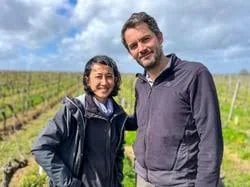
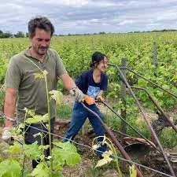

Jusqu'ici, le catalogue était intégralement méditerranéen. Grèce, Italie du Nord, Espagne du Sud, des vignes qui poussent avec la chaleur, des cépages qui ont appris à résister à la sécheresse, des vins qui sentent le soleil même quand ils sont frais. C'est un choix qui me ressemble, qui correspond à ce que j'ai appris en dix ans de viticulture provençale. Mais un catalogue, ça bouge. Et parfois, c'est un domaine qui vient vous chercher plutôt que l'inverse.
Domaine La Chance, c'est Jérôme Becuwe et Christine Kieu. Anciens de la gestion et de la communication à Paris, ils ont tout arrêté en 2019 pour reprendre des études agricoles et viticoles, se former auprès de vignerons de Saumur, puis prendre cinq hectares en main à Montsoreau et Turquant, deux villages perchés sur les coteaux qui surplombent la Loire. La roche ici est du tuffeau, cette craie douce et poreuse qui boit l'eau en hiver et la restitue lentement tout l'été. Une géologie qui explique beaucoup de choses. La tension du Chenin de ce coin, notamment, cette acidité qui tient des années sans jamais devenir agressive, ce fil conducteur qu'on retrouve dans le verre d'un bout à l'autre de la Loire.


Ce que le Chenin a de particulier
On parle beaucoup du Chenin Blanc comme du grand cépage incompris de France. C'est vrai, et c'est en train de changer. Jérôme et Christine font deux Chenin de caractères très différents. Les Heures heureuses, pressurage direct, élevage sept mois sur lies en cuve inox, est le vin de la fraîcheur immédiate : citrus, salinité, finale sapide. Volte-Face est autre chose : dix-huit mois en fûts de 400 litres sur des vignes de trente-cinq ans, un vin de tension et de minéralité, très digeste malgré l'élevage bois. Ce ne sont pas des vins nature au sens marketing du terme, ce sont des vins faits proprement, avec du Chenin qu'on a laissé travailler.
Le Cabernet Franc donne le Rouge des Bois et Un Monde Nouveau, deux Saumur-Champigny. Le premier est égrappé à 100 %, macéré six jours, nez de fraise des bois, bouche acidulée et fraîche, zéro tanin. Le second passe trois semaines en cuve béton, un an en bouteille, et développe cette finale crayeuse qui dit directement le plateau calcaire de Montsoreau. Jérôme fait aussi Midi Minuit, un effervescent de Cabernet Franc vieilli dix-huit mois sur lattes dans des caves de tuffeau creusées à 12°, aucun sucre résiduel, une sensation désaltérante qu'on ne croise pas souvent dans le pétillant français.
Pourquoi ce domaine, pourquoi maintenant
La réponse honnête : parce que j'ai goûté leurs vins et que ça m'a convaincu en deux verres. Pas parce qu'ils cochaient des cases, bio, naturel, petite production, récit fondateur. Ces cases, beaucoup de domaines les cochent. Ce qui m'a convaincu, c'est la précision. Chez Jérôme et Christine, rien n'est flou. Les vins sont nets, défendables, avec une identité de lieu très lisible. C'est ce que je cherche quand j'ajoute un domaine au catalogue : des vins qu'un restaurateur peut expliquer à sa table en une phrase, et que le client reconnaîtra à l'ouverture suivante.
La Chance élargit aussi la géographie de ce que je propose. Un Chenin de Saumur et un Saumur-Champigny ouvrent des discussions avec des comptes qui cherchent des références françaises à côté des vins grecs ou espagnols. C'est pratique. Mais surtout, c'est bon.